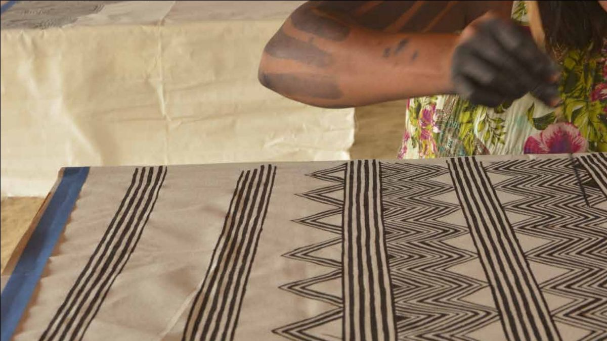
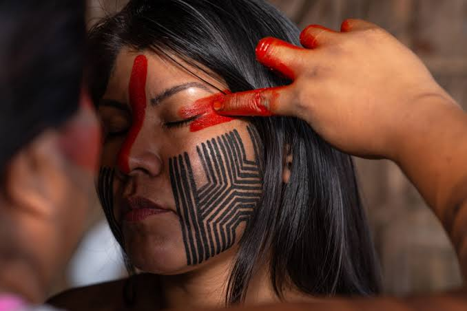
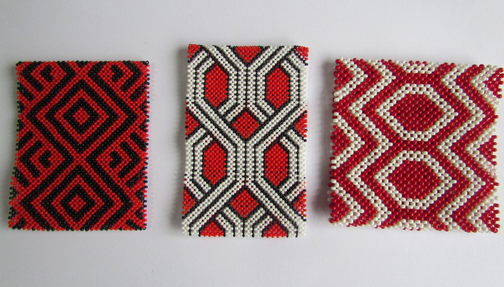

Menires Mebêngôkre Kayapó
As mulheres Mebêngôkre-Kayapó que, além de dominar as técnicas de desenho dos traços, também exercem o importante papel na preservação e na perpetuação desse conhecimento e, claro, da cultura indígena.

Biografia
Desde a infância, as menires, como são chamadas nas aldeias, aprendem as pinturas características de seu povo e as disseminam por gerações, fortalecendo durante esse processo, principalmente, as relações entre os Kayapós e suas aldeias. Além de exibir a identidade Mebêngôkre, esse tipo de arte corporal também é usado em rituais, encontros, adornos e festejos.
A partir de frutos de cores fortes, como o urucum e o jenipapo, os indígenas produzem suas tintas, que por vezes misturadas com carvão para obter outras tonalidades de cor. As pinturas chegam a durar oito dias e são reproduzidas pelas mulheres Kayapó com os próprios dedos ou pincéis de tala de folha de palmeira de babaçu – este consegue desenhar traços finos e com distância mínima entre os desenhos.
E é na natureza que as menires encontram a inspiração para criar seus desenhos: peixes, aves, mamíferos e plantas são um prato cheio para que elas exercitem a criatividade e ainda aprimorem suas técnicas, gerando infinitas possibilidades de variações e combinações. Além de desenhá-los no corpo, as pinturas também são aplicadas em em outras produções, como telas, tecidos, calçados, camisetas, bolsas, entre outros. Estes itens também são comercializados e representam uma fonte de renda sustentável para as aldeias Kayapó.
Suas obras

Referência bibliográfica:
TRADIÇÃO E FUTURO NA AMAZÔNIA. Grafismos e pinturas corporais marcam a identidade do povo Kayapó, 2021. Disponível em: https://www.funbio.org.br/grafismos-e-pinturas-corporais-marcam-a-identidade-do-povo-kayapo/.